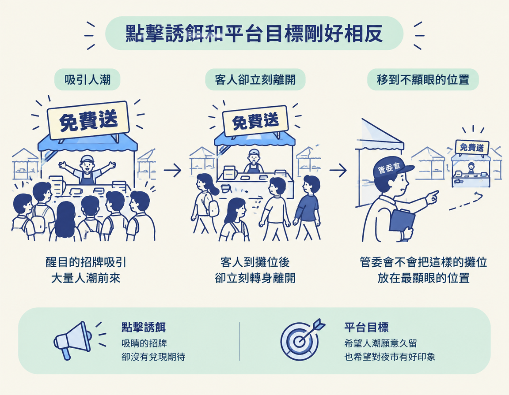

看懂平台為什麼不喜歡點擊誘餌：它雖然能帶來點擊，卻可能讓觀眾很快離開，損害平台重視的觀看時間與信任。
上一節提到，標題和內容不一致，會一點一點磨掉觀眾對你的信任。你可能會想：「就算觀眾失望，點擊數至少到手了，平台應該不會管這麼細吧？」
其實平台也會管。這一節會說明它為什麼要打壓點擊誘餌，以及平台的考量如何和你維護觀眾信任的目標連在一起。這裡說的「點擊誘餌」，是用誤導或誇大的標題吸引人點進來，內容卻沒有滿足標題承諾的做法。
要理解平台為什麼不喜歡點擊誘餌，得先看平台重視什麼。以 YouTube 為例，課程指出，它的目標是增加人們在平台上的觀看時間。
觀看時間和點擊數不是同一件事。點擊數表示有人點進來，觀看時間則表示他們留下來看了多久。對靠廣告營運的平台來說，觀眾停留的時間也有價值。因此，平台在意的不只是有多少人點進來，也在意有多少人願意留下來。
點擊誘餌的問題在於：它可能帶來很多點擊，但觀眾進來後很快就離開，因為他們發現內容不如預期，覺得時間花在別處更值得。
於是，表面上點擊數很漂亮，實際上留下來觀看的人卻不多。這樣的內容沒有增加觀看時間，反而把觀眾往外推。點擊數和觀看時間，就像兩張方向相反的路標。
可以把平台想成夜市的管委會：它希望人潮願意久留，也希望大家對夜市有好印象。如果有一攤一直舉著「免費送」的牌子吸引人過來，客人到攤位後卻立刻轉身離開，管委會自然不會想把它放在最顯眼的位置。點擊誘餌就像那塊吸引人、卻沒有兌現期待的招牌。

課程用「利益一致」（interests are aligned）形容這種情況：你和平台在避免點擊誘餌這件事上，目標相同。你希望守住觀眾的信任，平台希望觀眾願意繼續觀看。兩邊都需要內容真正留得住人。
課程指出，YouTube、Instagram，甚至 TikTok 都有團隊在處理這類問題，避免誤導性的標題獲得曝光，甚至降低它的觸及。平台想提高觀看時間，而點擊誘餌卻讓觀眾提早離開，兩者自然互相牴觸。
平台還有一個更根本的考量：如果你經營 YouTube，應該會希望觀眾信任這個平台，而不是覺得它充斥垃圾訊息。平台也需要照顧這份信任，因為觀眾必須願意相信自己在上面看到的內容。
課程也提醒，這件事並不容易。每天有上百萬支影片上傳，要維持內容品質是很複雜的問題。不過，平台的方向確實是打壓誤導性內容。
課程的書面教材附了幾份 YouTube 官方資源，讓你可以自行查證。其中兩份直接呼應這一節的內容：
第三份資源談的是「揭露生成式 AI 內容」，說明哪些情況下 YouTube 會要求創作者標註 AI 生成內容。這和點擊誘餌是不同主題，但同樣涉及平台對真實性的要求，有興趣可以另外閱讀。
把這件事拉回自己的內容：如果標題讓觀眾點進來，卻很快就離開，你傷到的不只是觀眾的信任，也和平台重視的訊號相衝突。平台會用觀眾是否留下來等訊號，安排內容的排序與推薦。
所以，點擊誘餌不是「騙到一次算一次」。它同時和觀眾、平台的目標背道而馳：你得到一次點擊，卻可能在兩邊都失去分數。下標時，除了問「有人會不會點」，也要想想「點進來的人會不會留下來」。
平台重視觀看時間與信任，不只看點擊數。點擊誘餌可能帶來大量點擊，卻讓觀眾提早離開，因此和平台的目標相反。課程指出，YouTube、Instagram、TikTok 都會處理這類內容，YouTube 的垃圾內容政策也列出誤導性點擊誘餌。你想守住觀眾的信任，平台想留住觀眾，兩者在這件事上的方向是一致的。
平台會出手壓低點擊誘餌。但還有一種比較不明顯、也比較慢的風險，可能來自你的產量。下一節會接著談這件事。